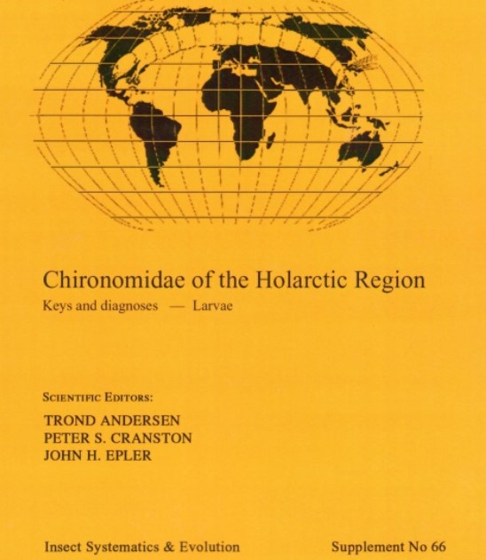
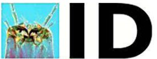
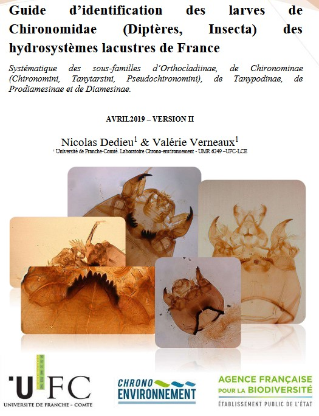
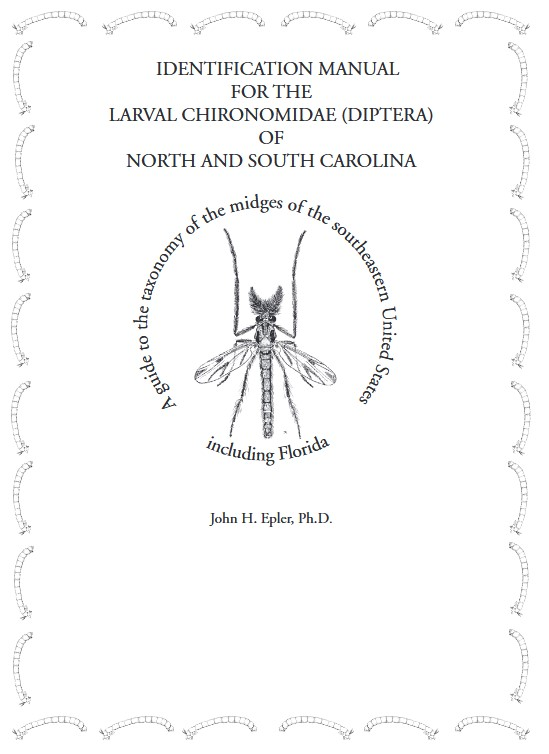
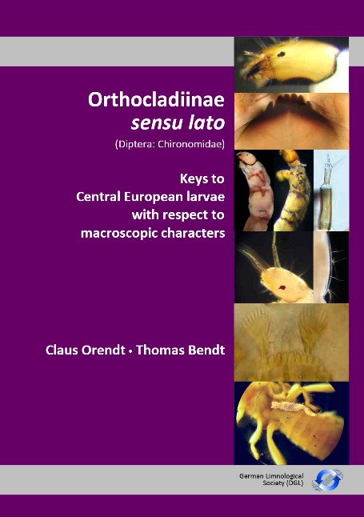
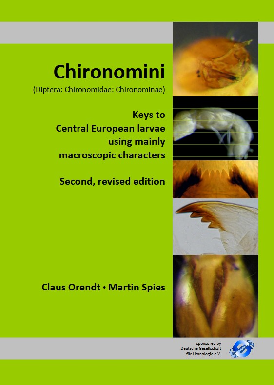
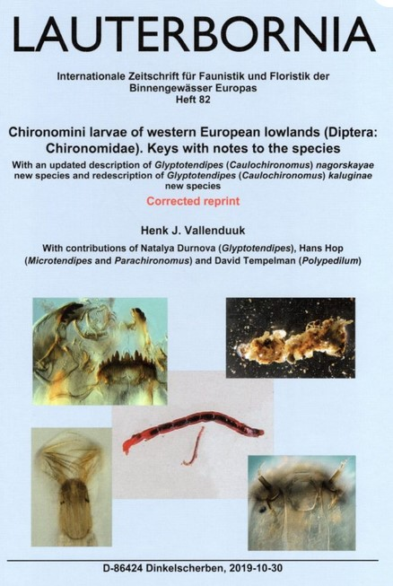

Andersen, T., Cranston, P. S., & Epler, J. H. (2013). Chironomidae of the Holarctic Region : Keys and diagnoses. Part 1—Larvae (Scandinavian Entomology). |
 |
Cranston, P. Chirokey.skullisland.info https://keys.lucidcentral.org/keys/v3/Chironomidae/index.html |
 |
Dedieu, N., & Verneaux, V. (2019, avril). Guide d’identification des larves de Chironomidae (Diptères, Insecta) des hydrosystèmes lacustres de France. |
 |
Epler, J. H. (2001). IDENTIFICATION MANUAL FOR THE LARVAL CHIRONOMIDAE (DIPTERA) OF NORTH AND SOUTH CAROLINA. |
 |
Orendt, C., & Bendt, T. (2021). Orthocladiinae sensu lato (Diptera : Chironomidae): Orthocladiinae, Prodiamesinae, Diamesinae, Buchonomyiinae, Telmatogetoninae, Podonominae: keys to Central European larvae with respect to macroscopic characters. Eigenverlag der DGL. |
 |
Orendt, C., & Spies, M. (avec Deutsche Gesellschaft für Limnologie). (2012). Chironomini (Diptera : Chironomidae: Chironominae): Keys to Central European larvae using mainly macroscopic characters (2nd, revised edition). |
 |
Vallenduuk, H. J. (2017). Chironomini larvae of western European lowlands (Diptera : Chironomidae) Keys with notes on the species. Lauterbornia, 82, 1‑216. |
 |